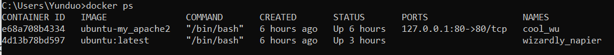
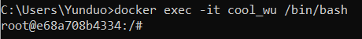

Before we dive into learning basic Linux Commands, it is important to know how to get into the Docker container to start.In order to login to a running docker container, first run docker ps in order to see all the running containers.
Then, run docker exec -t [container_id] /bin/bash in order to log into the container.
From here, you can create html files and edit in the vi text editor with Linux. Linux is an open-source operating system modelled on UNIX based on the Linux kernel, which was invented by Linus Torvalds. It is imperative to know basic linux commands in order to use the vi editor effectively. The following is a list of basic Linux commands that are commonly used.
| Command | Description |
|---|---|
ls |
Lists all files and directories in the present working directory |
ls |
Lists all files and directories in the present working directory |
ls-R |
Lists files in sub-directories as well |
ls-a |
Lists hidden files as well |
ls-al |
Lists files and directories with detailed information like permissions,size, owner, etc. |
cd or cd ~ |
Navigate to HOME directory |
cd .. |
Move one level up |
cd |
To change to a particular directory |
cd / |
Move to the root directory |
cat filename |
Displays the file content |
sudo |
Allows regular users to run programs with the security privileges of the superuser or root |
rm filename |
Deletes a file |
clear |
Clears the terminal |
mkdir directoryname |
Creates a new directory in the present working directory or a at the specified path |
rmdir |
Deletes a directory |
mv |
Renames a directory |
rmdir |
Deletes a directory |
apt-get |
Command used to install and update packages |
| Command | Description |
|---|---|
vi filename |
To create a file or access an existing file and use vi |
vi -r filename |
To recover file that was being edited when system crashed |
:wq |
To save modified or new file and exit vi |
:q! |
To quit vi even though latest changes have not been saved |
vi filename |
To create a file or access an existing file and use vi |
vi -r filename |
To recover file that was being edited when system crashed |
:wq |
Press ESC first. Then use code to save modified or new file and exit vi |
:q! |
Press ESC first. Then use code to quit vi even though latest changes have not been saved |
i |
Insert at cursor (goes into insert mode) |
a |
Write after cursor (goes into insert mode) |
A |
Write at the end of line (goes into insert mode) |
u |
Undo last change |
U |
Undo all changes to the entire line |
o |
Open a new line (goes into insert mode) |
dd |
Delete line |
D |
Delete contents of line after the cursor |
C |
Delete contents of a line after the cursor and insert new text. Press ESC key to end insertion |
dw |
Delete word |
cw |
Change word |
x |
Delete character at the cursor |
r |
Replace character |
s |
Substitute one character under cursor continue to insert |
~ |
Change case of individual character |